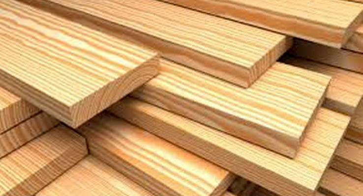

Cómo elegimos la madera para nuestros muebles
En Hermanos Jota cada mueble empieza mucho antes de la primera cortada: empieza en la elección de la madera. No todas las maderas sirven para lo mismo, y aprender a distinguirlas es la mitad del oficio.
Trabajamos principalmente con maderas nativas y recuperadas. Buscamos que cada tabla cuente una historia y que, con los años, el mueble envejezca bien en lugar de deteriorarse.

A continuación te contamos dos cosas que siempre miramos antes de comprar madera para un proyecto nuevo.
El secado de la madera
Una madera mal secada se tuerce, se raja y arruina el trabajo. Por eso dejamos estacionar los tablones durante meses antes de usarlos, controlando la humedad hasta que están listos para el taller.
Las vetas y el carácter
Cada veta es única. Elegimos las piezas pensando en cómo va a quedar el dibujo final de la mesa o el estante, porque ese detalle es lo que hace que un mueble hecho a mano no se parezca a ningún otro.